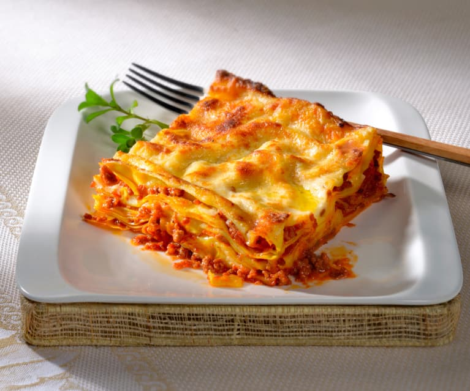

Lasagna

Lasagne are a type of pasta, possibly one of the oldest types, made of very wide, flat sheets.
Either term can also refer to an Italian dish made of stacked layers of lasagne alternating with fillings ...
Ingredients
- ½ cup diced carrot
- ½ cup diced celery
- ½ cup diced yellow onion
- 1 tablespoon olive oil
- 7 ounces ground beef
- 6 ounces ground pork
- ½ cup dry red wine
- 1 ½ cups plain tomato sauce
Steps
- Saute pancetta in a large stockpot over medium-high heat until fat has rendered, 1 to 2 minutes.
- Stir wine into the stockpot and bring to a boil.
- Pour 1 more cup of broth into the sauce.
- Start preparing pasta after sauce has been cooking for 1 1/2 hours.
- Drain spinach in a mesh strainer set over a bowl, pressing it down with a fork to squeeze out as much water and possible; reserve the liquid.
- Sift flour into a bowl. Make a well in the center; add eggs, spinach, and about 1 tablespoon of the reserved liquid.